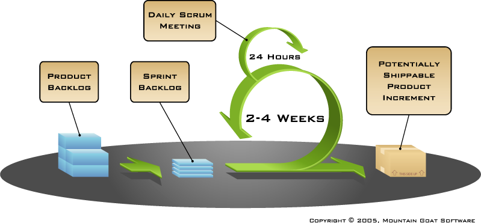
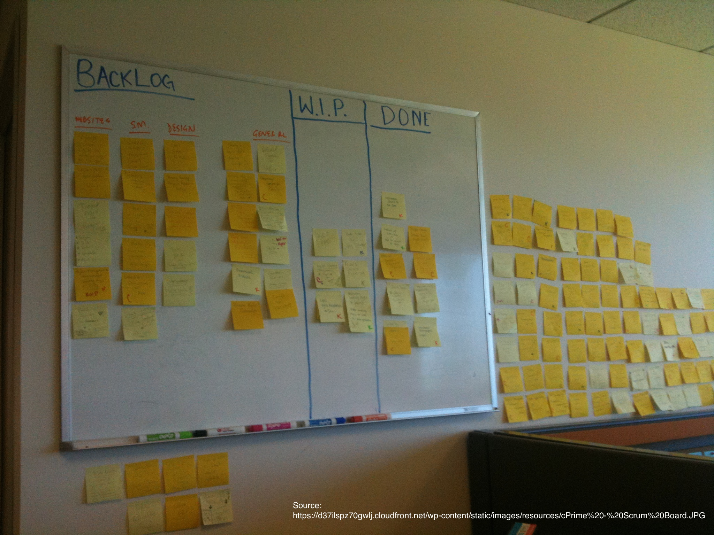

Despre Agile
10 aprilie 2014
Creat de Cristian Dinu / @cdinu

Cum arată un proiect

Un proiect IT "Clasic", sursa Wikipedia

Waterfall by SSyn-Stock.
Cum putem să îmbunătățim timpul?
Fără să pierdem calitate și fără să adăugăm stress
Faze
Faze suprapuse
Iterații
Ce zice PMI?
De ce Agile?
Manifestul Agile
Agile, în practică
Scrum (grămadă)
Sursă imagine.Scrum (metodologie agilă)
Sursă imagine.
Echipă și roluri
Product Owner
Echipa de dezvoltare (specialiștii)
Scrum Master

Sursă imagine.
Evenimente
Sprintul
Planificarea sprintului
Ce putem livra în această perioadă?
Daily Scrum
Cu găini și cu porci
Demo
Cum începem?
La fel ca la PMI, cu identificarea părților interesate (stakeholder-i)
Specificațiile
Ce este un user story?
As a [stakeholder], I want [some goal] so that [some reason].
Ex. Ca supervizor vreau ca platforma să trimită remindere automate pentru a nu uita să verific activitatea agenților.
Alte exemple
- Ca utilizator vreau să am backup comple al dosarelor de angajați
- Ca manager vreau să pot crea, șterge și modifica conturile subalternilor
- Ca agent de recrutare doresc sa pot vedea profilurile de social media ale candidatului
Ceva și mai simplu
Panoul (Kanban)

Panouri virtuale

Agile nu este numai pentru IT
Beneficii și idei pentru orice domeniu
- Munca "vizibilă"
- Standup meetings
- Auto-organizarea priorităților
- Limitarea muncii nefinalizate (work-in-progress)
- Știi cine, ce, și de ce (via user stories)
- Testare frecventă a rezultateloe
- Plăcere imediată (Instant gratification)
Extra resurse
Agile programming — for your family